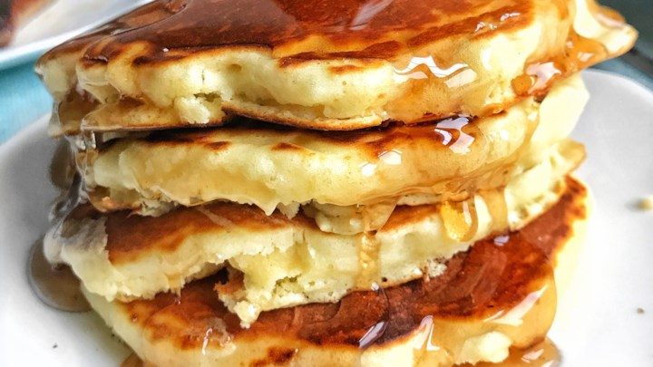

Old Fashioned Pancakes
Ingredients
- 1 1/2 cups of all-purpose flour
- 3 1/2 teaspoons baking powder
- 1 teaspoon of salt
- 1 tablespoon white sugar
- 1 1/4 cups of milk
- 1 egg
- 3 tablespoons of butter
Instructions
The time is will take to prep is 5 minutes, to cook 15 minutes,
and it will be completely ready in 20 minutes
- In a large bowl, whisk together the flour, baking powder, salt, and sugar.
- Then begin pouring in the milk, cracked eggs, and melted butter in and whisk until smooth
- Pre-heat the pan a little over medium temperature.
- Once the pan is heated pour over the batter, 1/4 cup is for each pancake.
- Wait until both sides are between the color brown and gold.
- Eat!